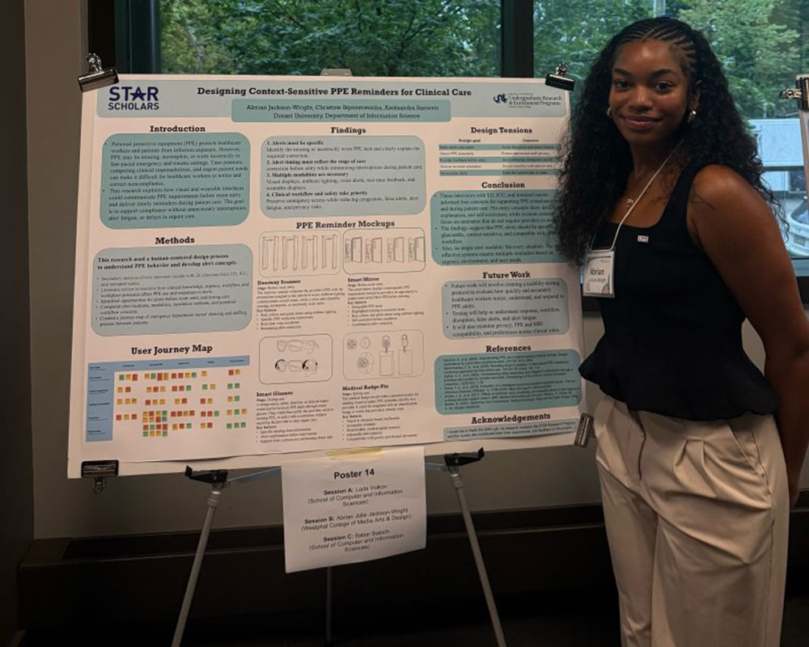
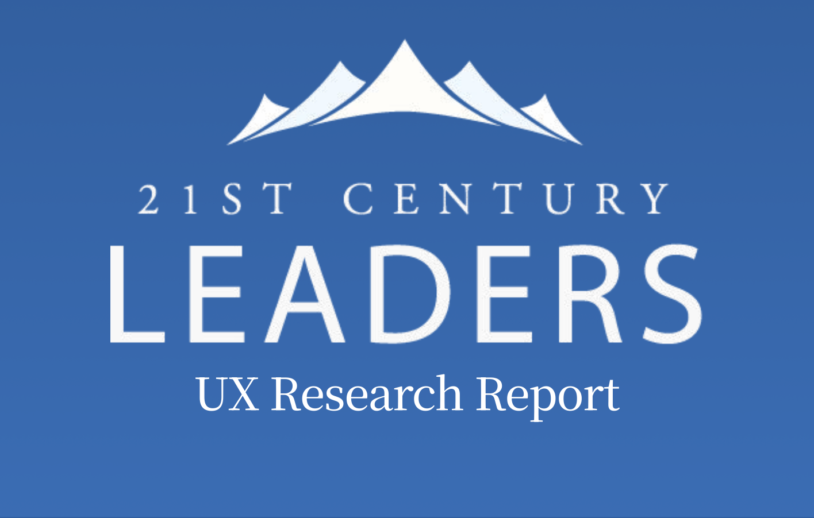

Research and Experience
Drexel STAR Scholars Research Intern
June 2026 to August 2026

This project explored ways to help nurses follow personal protective equipment (PPE) requirements before entering and while caring for patients. I helped translate nurse research and design workshop findings into concepts for clear, context-sensitive reminders that support safety without disrupting patient care.
Learn More21st Century Leaders Website UX Research
September 2025 to May 2026

21st Century Leaders is a nonprofit that provides leadership programs and career development opportunities for high school students. I researched how students use its website to find resources, learn about events, and stay involved in the program.
Learn More